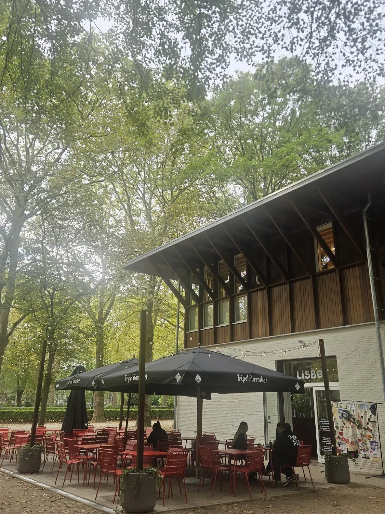
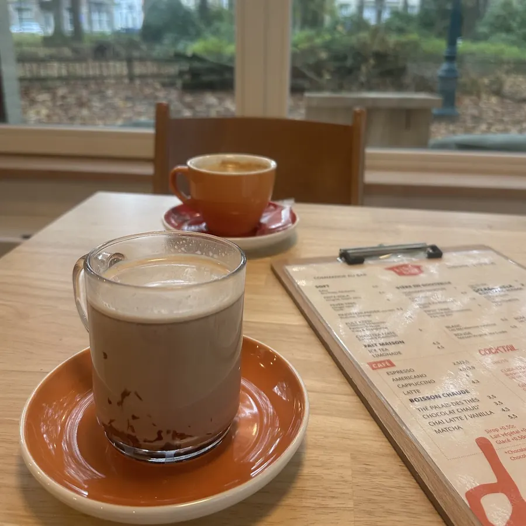
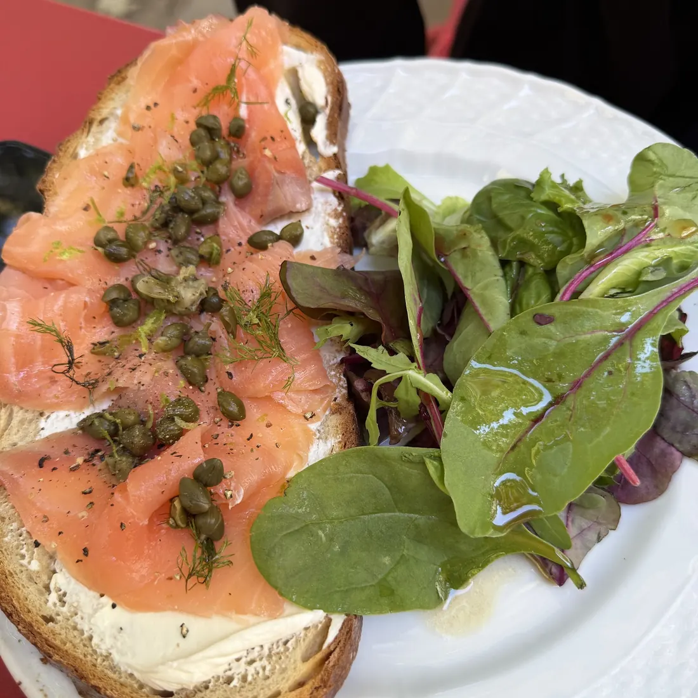
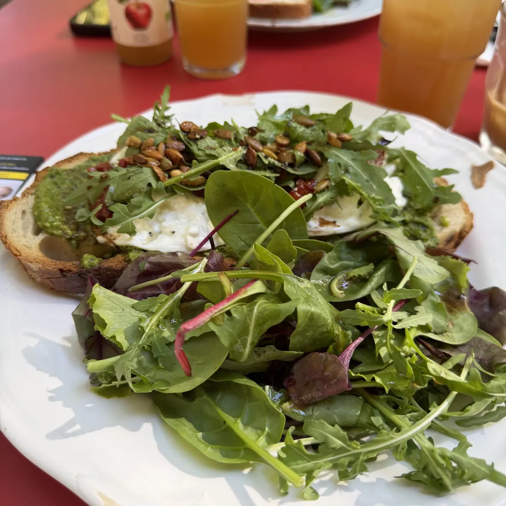
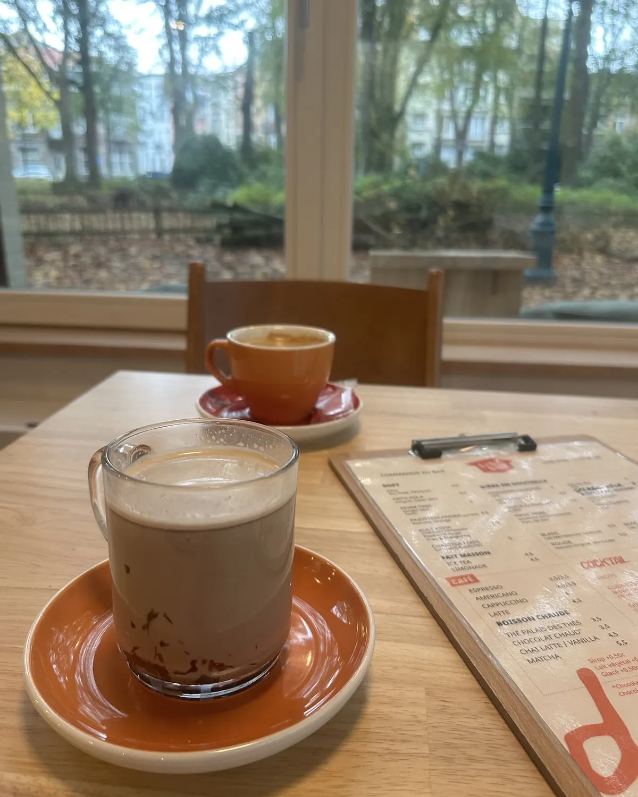
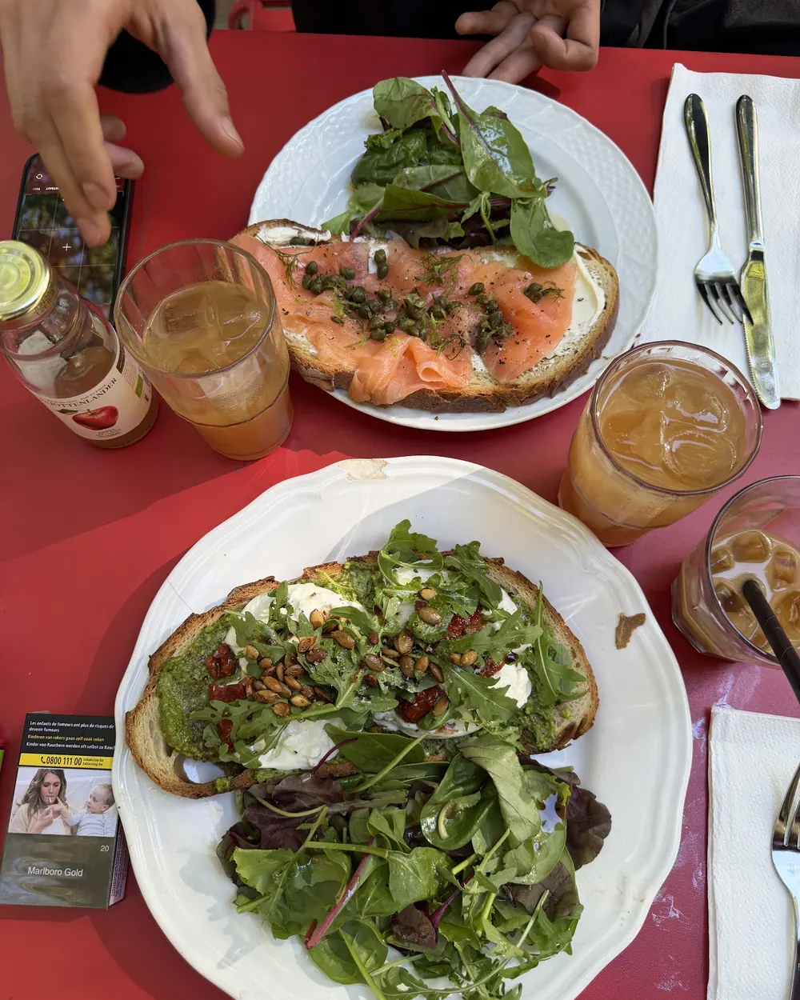
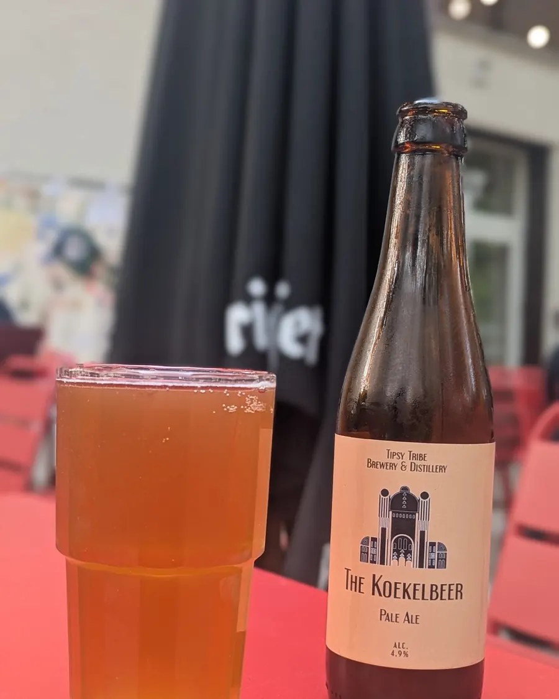
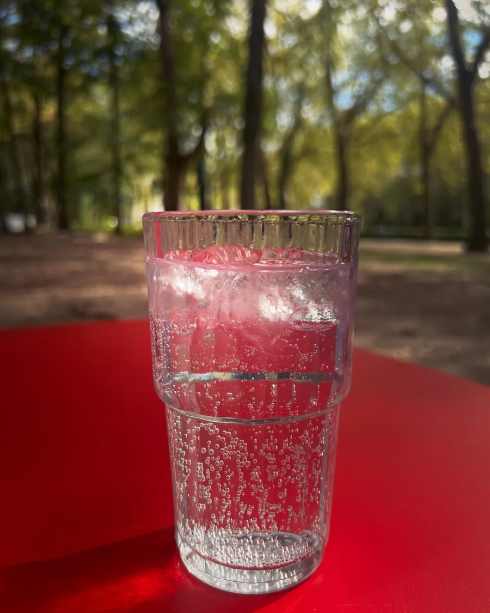
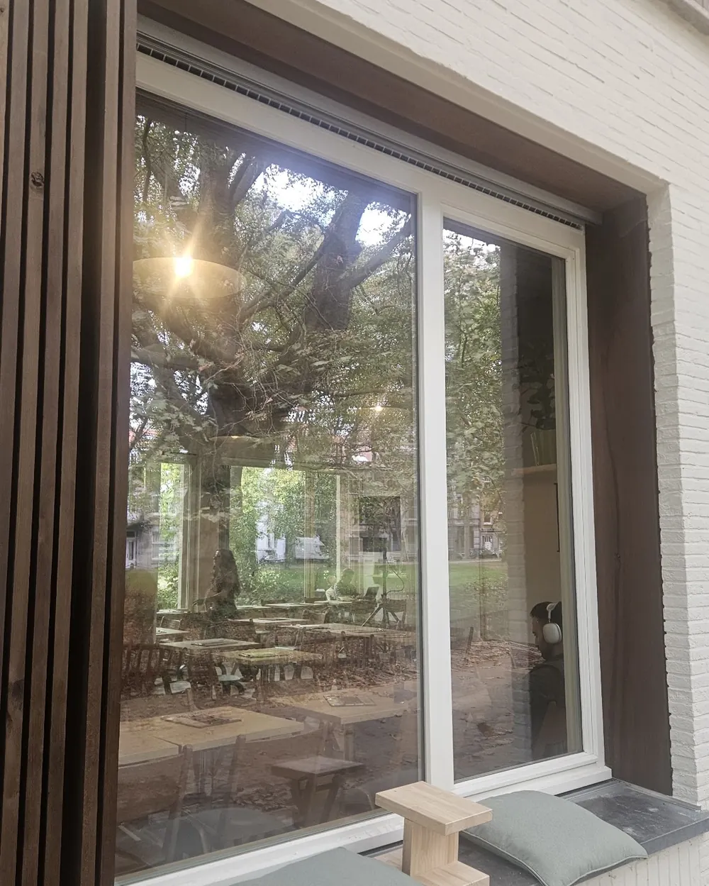

Café · terrasse · Koekelberg
Pavillon Lisbet
Un café au milieu des arbres du parc Elisabeth.
Des toasts sur pain au levain, une soupe maison, des cafés, des jus bio et la bière de Koekelberg. Dehors, une grande terrasse rouge sous les arbres ; dedans, une salle claire qui donne sur le parc. Ouvert tous les jours, de 9 h à 21 h.
- 4,3 sur 5 · 38 avis Google
- Petit déj' dès 9 h
- Apéro à partager

« Tout est neuf et ça se ressent ! »lola R. · avis Google

Une journée au pavillon
Du premier café à l'apéro
Le bar et la terrasse ouvrent à 9 h et ferment à 21 h, tous les jours. Le petit déjeuner se prend jusqu'à 14 h, les toasts du déjeuner arrivent à 11 h 30. On commande au bar.
Café, bar et terrasse9:00 – 21:00
Petit déjeuner9:00 – 14:00
Déjeuner11:30 – 14:00
La carte
Des toasts bien garnis, sur pain au levain
Le pain vient de la boulangerie Sirre. Les prix sont ceux de la carte posée sur les tables, en euros.
Petit déjeuner 9:00 – 14:00
Pain, beurre, confiture, miel, emmental en tranche · œuf à la coque +1 €
Pain, purée de cacahuète bio, tartinade à la fraise bio, bananes
Déjeuner 11:30 – 14:00
Avocat, fromage frais, jalapeños, coriandre, filet de citron et fines herbes
Burrata fraîche, pesto de roquette maison, tomates semi-séchées
Saumon fumé, fromage frais, câpres, aneth et fines herbes
Toast + soupe maison
Apéro à partager
Tous les toasts : pain au levain de la boulangerie Sirre.


Café
Chocolat de chez Belgium Chocolate Village
Sirop, lait végétal ou version glacée : +0,50 €
Fait maison & soft
Jus bio, pomme ou orange
Limonade fermentée, passion & hops ou yuzu & mandarine
Bières & vins
Brasserie koekelbergeoise, 33 cl
Cocktails
Gin, Fever-Tree tonic, citron
Moscow, London ou Jamaican
Gin, citron, basilic frais
En ligne, en une minute
Une table en terrasse ou au chaud
La carte des boissons le dit : « Une demande ou une réservation ? ». Choisissez le jour, l'heure et le nombre de personnes, l'équipe vous confirme la table.
Le lieu
Une terrasse rouge sous les grands arbres
Le pavillon est posé dans le parc Elisabeth, à Koekelberg, à deux pas du métro Simonis. Dehors, des tables rouges à l'ombre des arbres ; dedans, de grandes fenêtres sur le parc, où l'on peut aussi travailler sur son ordinateur.
Terrasse dans le parcTables et chaises rouges sous les arbres
Salle intérieure« intérieur chaleureux », dit Tim S.
On peut y travailler« sur son ordi », dit Sophie B.
Pain au levainDe la boulangerie Sirre
Bière de KoekelbergThe Koekelbeer de Tipsy Tribe
Lait végétalCafés et boissons chaudes, +0,50 €





Avis des clients
« 5 étoiles parce qu'on ne peut pas en mettre 6 »
Horaires et accès
Ouvert tous les jours, de 9 h à 21 h
Ouvert tous les jours de 9 h à 21 h
| lundi | 9 h – 21 h |
|---|---|
| mardi | 9 h – 21 h |
| mercredi | 9 h – 21 h |
| jeudi | 9 h – 21 h |
| vendredi | 9 h – 21 h |
| samedi | 9 h – 21 h |
| dimanche | 9 h – 21 h |
Av. des Gloires Nationales 121081 Koekelberg · dans le parc Elisabeth
hello@pavillonlisbet-koekelberg.beUne demande, un groupe, une réservation